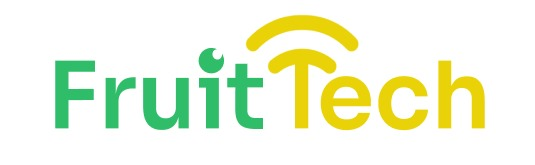

SIMULADOR
Utilize nossa calculadora para estimar suas perdas de alimentos!
Qual fruta você vende?
Qual é a quantidade de toneladas vendidas ao ano?
Qual é o faturamento anual?
Quantidade da sua frota de caminhões?
Qual o tamanho dos baus da sua frota (metros)?
Simular